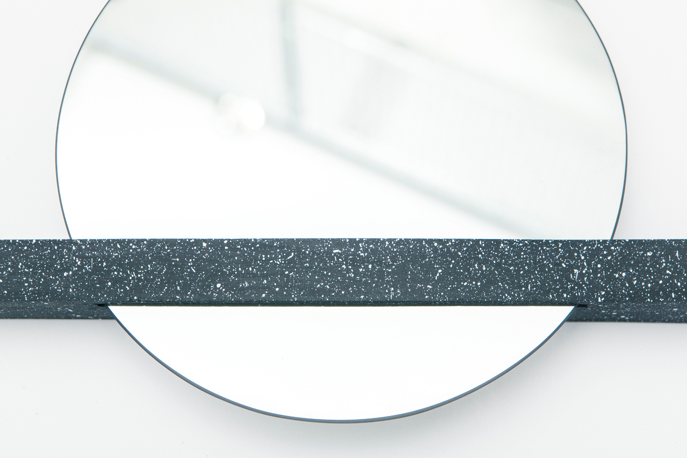
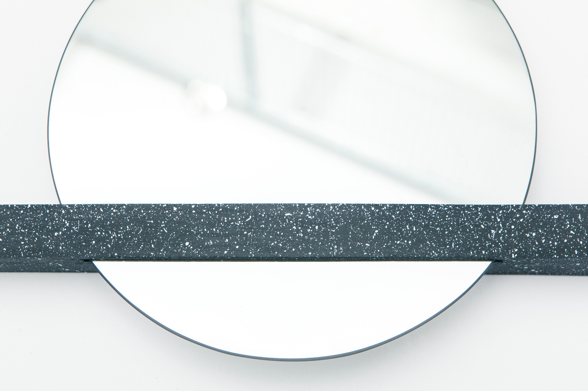
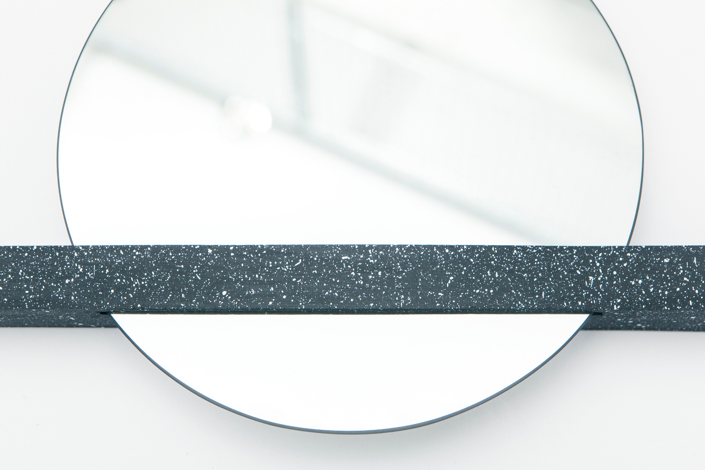
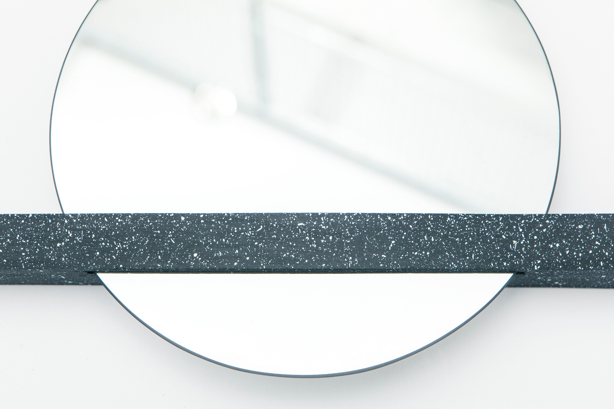

 

Patch of Sky is a set of internet connected ambient lights, enabling you to share the sky above you with loved ones, wherever they are.
Each object gathers in real-time weather information based on your current Facebook location and displays it with colored light animations.
A Patch of Sky is your partner or friend’s silent companion, that will tell them about the sky and world you’re living in, while away.
2014 - Fabrica
Role: Concept/Interaction design/technology
Press:
Gizmodo,
Core77,
Creative Applications,
Fast Company
Photos: Shek Po Kwan
Website: www.patchofsky.info
Info
Patch of Sky is a self-initiated project started at Fabrica initially as a collaboration between me and graphic designer Akshataa Vishwanath and later involving other designers and creatives at Fabrica.
This project first started with a workshop that design firm BERG (R.I.P.) held at Fabrica in Summer 2013. The workshop was part of a collaboration between the two studios with the goal of using Fabrica as sandbox for BERG's new project BERGCloud, an hardware and software solution for the internet of things
Drawing from discussion sparked over the workshop we began to think about some product that would take full advantage of the services and social presence available on the internet. This object would integrate with and extend the online world, rather than use it solely as a network infrastructure for connecting far away things.
Design & Technology
Main inspiration for Patch of Sky came from our working place. Fabrica hosts designers and artists from all over the world, thus distance and nostalgia are naturally recurring topics. “How’s the weather there?” is a common question that parents, friends and partners ask over the phone, this is how they try to get a sense of the world distant ones are living while away. Drawing from this conversations we had the idea of Patch of Sky, an object that would silently connect people over distance, just by letting them “share the sky” under which they’re living in.
The Patch of Sky prototypes use Arduino and BERGCloud shield for connecting to the web, while custom electronics and the Arduino Light Animation library are used for controlling the a RGB led strip. A Python web application handles linking of a Patch of Sky with a Facebook account. Weather at the user's location is then retrieved using Weather Undergroud API and sent to the paired Patch of Sky object through BERGCloud API.